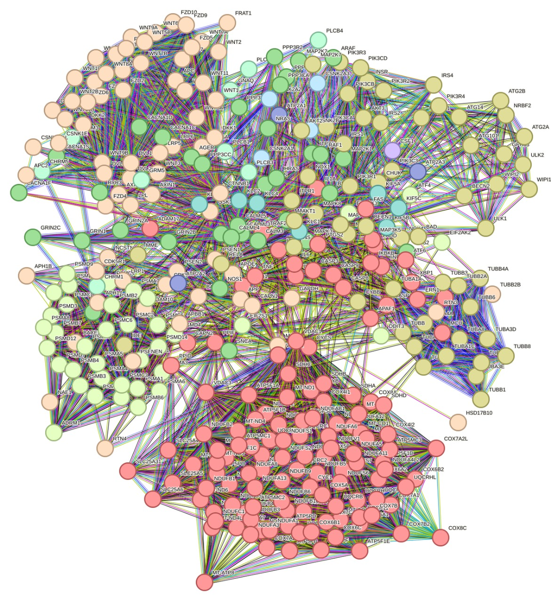
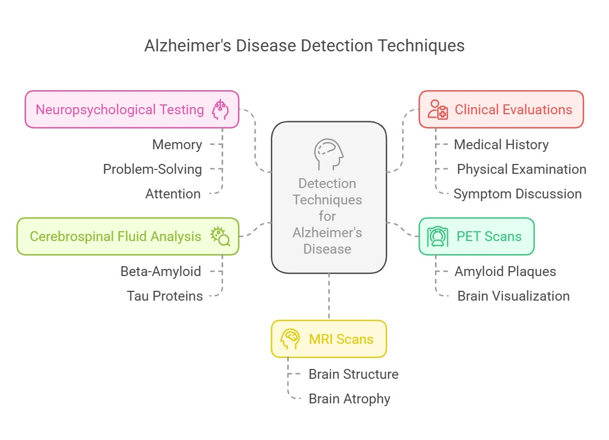

AlzMatrix
About Alzheimer's
Summary of the paper on Alzheimer’s Disease
Population Impact
Globally, 32.3 million people have Alzheimer's dementia (11.4 million men, 20.9 million women).
In Europe, 6.9 million people are affected (1.9 million men, 5.0 million women).
In the U.S., 6.9 million Americans aged 65+ have AD, projected to reach 13.8 million by 2060 without medical breakthroughs.Disease Overview
Alzheimer’s disease (AD) is a neurodegenerative disorder marked by:
β-amyloid (Aβ) plaques and hyperphosphorylated tau (pTau) tangles
Memory loss and cognitive decline
Unclear disease mechanisms and lack of treatments to halt progressionRisk Factors
✅Genetics:
APOE4 is the strongest genetic risk factor for AD.
Familial AD (FAD) is linked to mutations in APP, PSEN1, and PSEN2 genes.✅Environmental & Metabolic Factors:
Aging, inflammation, infections, diabetes, and lifestyle factors contribute to AD.
Pathology & Mechanisms
Aβ Accumulation: Impaired clearance leads to neurotoxicity and inflammation.
Tau Pathology: Abnormal tau aggregation spreads neurodegeneration.
Neuroinflammation: Microglial activation plays a role in disease progression.Diagnosis & Drug Development
🔬Biomarkers: Studied in CSF (Cerebrospinal fluid) and peripheral blood.
💊 Current Drugs: Cholinesterase inhibitors and NMDA antagonists only manage symptoms.
🧪 Emerging Therapies: Aβ-targeting drugs and tau-focused treatments.APOE4 & Alzheimer’s Disease
🔹 APOE4 affects lipid transport, neurovascular function, and microglial activity.
🔹 Carriers have an increased risk and earlier onset of AD.
🔹 Targeting APOE4 could lead to new therapeutic strategies.Sex Differences in Alzheimer’s Disease
💡 Women are more affected than men due to biological differences:
Hormones: Estrogen decline post-menopause increases risk.
Genetics: X chromosome-linked genes play a role.
Metabolism: Age-related Y chromosome loss is linked to neurodegeneration.
Research Bias: Historically male-focused, but tools like XWAS now uncover sex-specific genetic factors.Epigenetic Clocks & Alzheimer’s Disease
🧬 Epigenetic clocks measure biological aging through DNA methylation patterns:
📌 First-generation clocks (Hannum, Horvath) estimate age but have limitations.
📌 Second-generation clocks (PhenoAge, GrimAge) predict health risks and lifespan.
📌 Third-generation clocks (DunedinPoAm, DunedinPACE) track biological aging rate.
📌 Brain-specific clocks (DNAmClockCortical, PCBrainAge) detect changes linked to neurodegeneration.
References
Krishnamurthy HK, Jayaraman V, Krishna K, Wang T, Bei K, Changalath C, Rajasekaran JJ.
An overview of the genes and biomarkers in Alzheimer's disease. Ageing Res Rev. 2025 Feb;104:102599.
doi: 10.1016/j.arr.2024.102599. Epub 2024 Nov 28. PMID: 39612989.
Zheng Q, Wang X. Alzheimer's disease: insights into pathology, molecular mechanisms, and therapy.
Protein Cell. 2025 Feb 1;16(2):83-120. doi: 10.1093/procel/pwae026. PMID: 38733347; PMCID: PMC11786724.
Liu E, Zhang Y, Wang JZ. Updates in Alzheimer's disease: from basic research to diagnosis and therapies.
Transl Neurodegener. 2024 Sep 4;13(1):45. doi: 10.1186/s40035-024-00432-x. PMID: 39232848;
PMCID: PMC11373277. (DIAGNOSIS)
Lopez-Lee C, Torres ERS, Carling G, Gan L. Mechanisms of sex differences in Alzheimer's disease.
Neuron. 2024 Apr 17;112(8):1208-1221. doi: 10.1016/j.neuron.2024.01.024. Epub 2024 Feb 22.
PMID: 38402606; PMCID: PMC11076015. (SEX DIFFERENCES)
Villa C, Combi R. Epigenetics in Alzheimer's Disease: A Critical Overview. Int J Mol Sci.
2024 May 29;25(11):5970. doi: 10.3390/ijms25115970. PMID: 38892155; PMCID: PMC11173284. (EPIGENETICS)
Awareness & Survey
Survey insights and the need for awareness
Fill Survey Form in English
Survey Evaluation
|
The survey assessed public awareness and misconceptions about Alzheimer's disease. The results indicate widespread misconceptions regarding the disease's causes, symptoms, and management.
- Basic Understanding:
- 42% correctly identified that Alzheimer's is a type of dementia with no cure, while 58% were incorrect.
- Only 37% knew that people in their 30s can have Alzheimer's.
- 24.4% falsely believed Alzheimer's could result from black magic or a bad eye.
- Risk Factors & Prevention:
- 73% were unaware that high blood pressure or cholesterol increases Alzheimer’s risk.
- Only 12% knew that mental exercise does not fully prevent Alzheimer's.
- 46% recognized that poor nutrition can worsen symptoms.
-
Symptoms & Diagnosis:
- 63% did not know trouble handling money could be an early symptom.
- 75% mistakenly believed sudden confusion is likely due to Alzheimer's.
- 72% falsely thought people with Alzheimer's remember recent events better than older ones.
-
Treatment & Care:
- 8.7% falsely believe that prescription drugs can slow disease progression.
- 47.8% understood that people with Alzheimer's eventually need 24-hour supervision.
- 44% agreed that psychotherapy can help in early stages.
- 83% incorrectly believed reminding patients about repetition is helpful.
-
Social Perceptions:
- Some survey questions on social attitudes (e.g., care in state-run nursing homes, embarrassment, and social participation) were left unanswered, possibly indicating hesitation in discussing societal stigma.
The survey highlights significant misconceptions about Alzheimer's disease, particularly regarding risk factors, symptoms, and treatment. Educational efforts are needed to correct these misunderstandings and promote better awareness and early detection.
Proteins & Networks
Protein Interaction network using StringDB
Drugs & Treatments
Here is a list of FDA-approved drugs for the treatment of Alzheimer's disease:
For Mild to Moderate Alzheimer's Disease
- Cholinesterase Inhibitors:
- Donepezil: Prevents the breakdown of acetylcholine. Can treat mild, moderate, and severe Alzheimer's.
- Galantamine: Reduces the breakdown of acetylcholine and stimulates released acetylcholine.
- Rivastigmine: Prevents the breakdown of acetylcholine and butyrylcholine.
- Combination Medications:
- Memantine and Donepezil: Combines the NMDA antagonist memantine, which regulates glutamate, with donepezil.
For Moderate to Severe Alzheimer's Disease
- Memantine: An NMDA antagonist that helps regulate glutamate levels to prevent brain cell death.
- Rivastigmine Patch: A patch version of rivastigmine suitable for those who prefer not to take oral medications.
- Donepezil (also for moderate to severe).
Immunotherapy for Early Alzheimer's Disease
- Lecanemab: Targets beta-amyloid plaques to reduce cognitive decline in early Alzheimer's.
- Donanemab: Similar to lecanemab, it targets beta-amyloid to help reduce plaques.
Additional Treatments
- Brexpiprazole: An atypical antipsychotic used to treat agitation associated with Alzheimer's.
These medications can help manage cognitive and behavioral symptoms, slowing disease progression and maintaining function for longer periods.
References